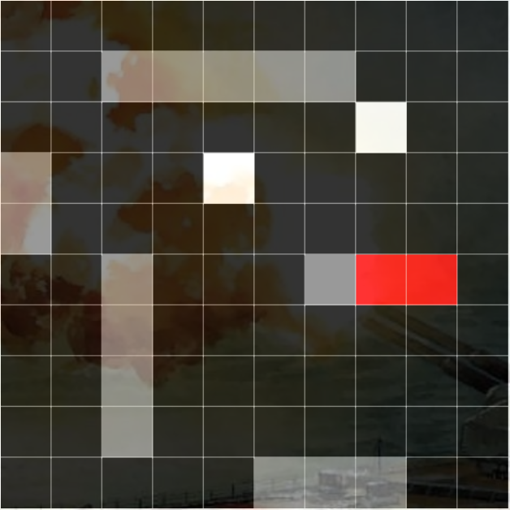

Maze Generator
This is a Program I made, that implements the Randomized Prim's algorithm. Which does a depth first search and recursive backtracking. After generating the maze, I decided to give you a chance to solve it. Move the black dot with (W,A,S,D).
Battleship
I created a version of the game battleship. This is a multiplayer game that runs on a Node.js server using socket.io. While it doesn't have the best graphics, (I'm not an artist). It was my first game that connected multiple users over the internet.
Ninny's Chess
This is my version of a game called Ninny's Chess.
The rules are that all pieces can only move in the direction of the arrows
of the tile they are on.
The Ninnys ( ) can only move 1 square at a time.
) can only move 1 square at a time.
The Numskulls ( ) can move as far as they want in the direction of the arrows.
) can move as far as they want in the direction of the arrows.
The Brain ( ) can move only one square like the ninnys.
) can move only one square like the ninnys.
However if the Brain is captured you lose, and your opponent wins.
Red Moves First